Free
Claudeを始める
$0
あざみ写真館の皆様へ
あざみ写真館様は全台Macでご利用のため、このページではMacに絞って、ClaudeをはじめてPCで使うまでの手順をまとめました。ClaudeのProプランを月額で契約し、Claudeデスクトップアプリをインストールして、練習用フォルダで動作確認まで進めます。所要時間は10〜20分ほどです。
手順どおりに進めれば大丈夫です。途中で分からないところが出たら、無理に進めず画面のスクリーンショットを保存して共有してください。研修当日にも一緒に確認します。
最初にやること
Claude Codeを使うため、無料プランではなくClaude Proにしてから進めます。プラン画面では Pro を選び、請求は年間ではなく 月額 にしてください。
Claude公式ヘルプでも、Claude CodeはProまたはMaxプランのサブスクリプションで利用する流れが案内されています。
Claudeを始める
選ぶプラン
リサーチ、コーディング、整理
より高い制限、優先アクセス
表示金額や内容は変わる場合があります。画面ではProと月額請求を確認してください。
事前確認
ClaudeデスクトップアプリはMacで利用できます。Claude公式ヘルプでは、MacはmacOS 11以上が案内されています。
アプリのインストール後は、普段Claudeで使っているアカウントでサインインします。一度アプリを開き、簡単な依頼を送れるところまで確認してください。
Claudeデスクトップのダウンロードページを開き、「macOS用をダウンロード」を押します。
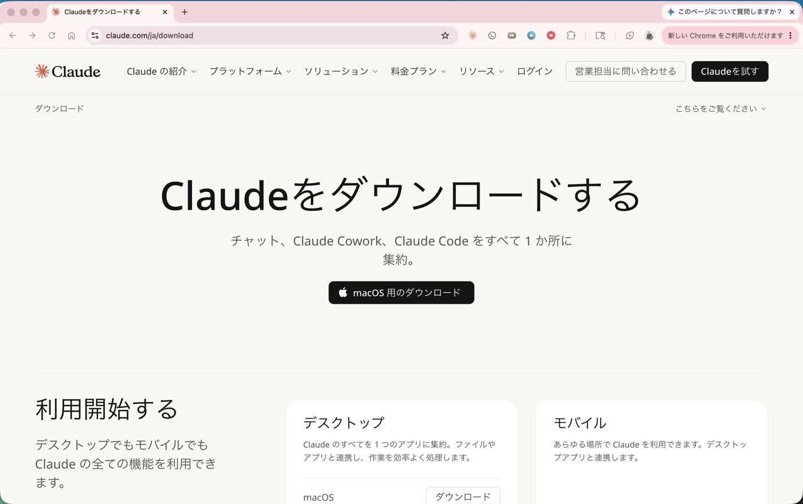
ダウンロードフォルダを開き、Claude.dmg が入っていることを確認します。見つかったら、そのファイルを開きます。
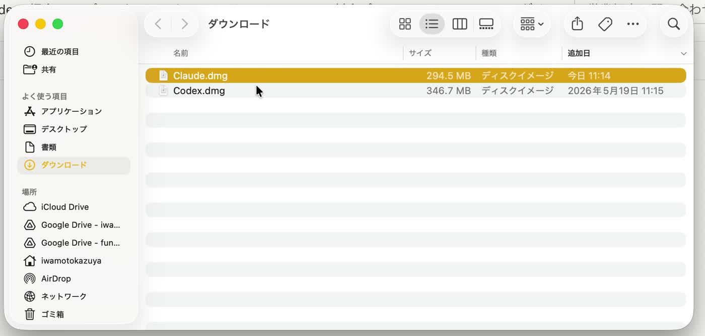
開いた画面でClaudeのアイコンをApplicationsフォルダへドラッグします。これでMacへのインストールは完了です。
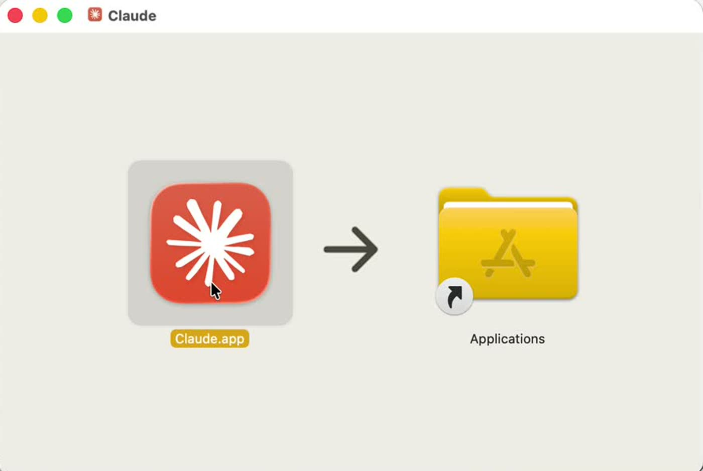
Applicationsフォルダに入った Claude.app を開きます。初回はサインインが必要になる場合があります。
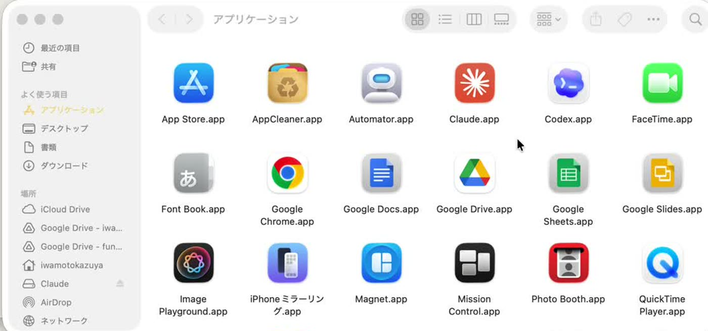
Claudeのログイン画面が開いたら、普段使うアカウントでログインします。Googleアカウントまたはメールアドレスで進めてください。
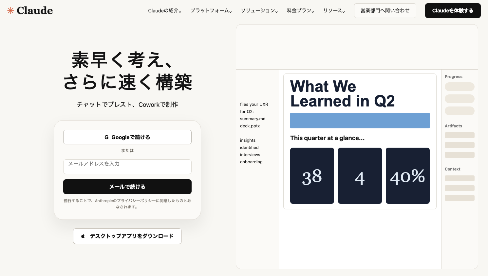
Claudeが開いたら、左側に会話やプロジェクト、中央に入力欄が表示されます。作業は、まず練習用フォルダで試します。
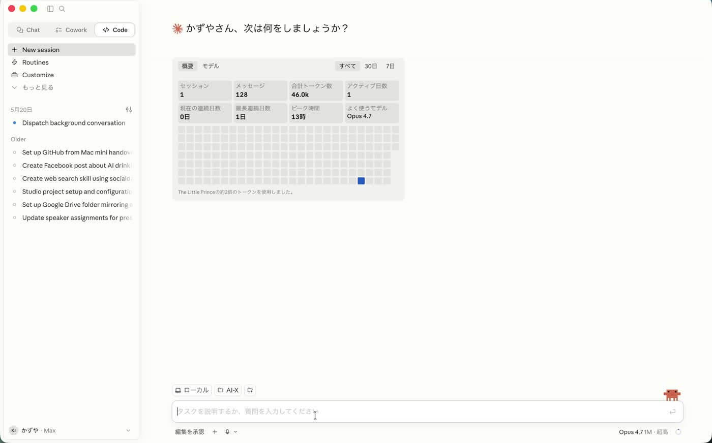
Finderでデスクトップを開き、新規フォルダを作成して、分かりやすい名前（例：Claude練習）にします。
AI-X という名前になっていますが、あざみ写真館様では Claude練習 など分かりやすい名前で大丈夫です。

Claudeの左上にある Chat / Cowork / Code の中から Code を選び、New session を開きます。
New session を開いたあと、チャット欄の上部にある「フォルダを追加するマーク」から作業フォルダを選ぶ画面を開きます。先ほど作った練習用フォルダを選びます。最初は空のフォルダで大丈夫です。
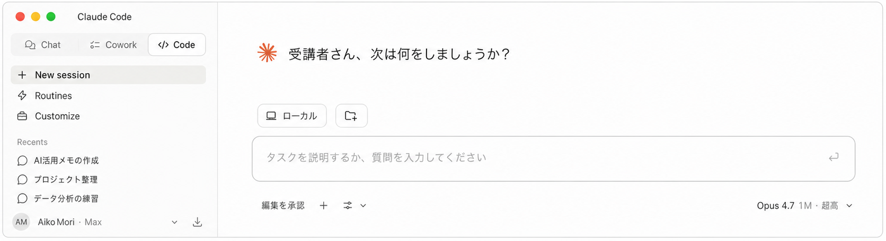
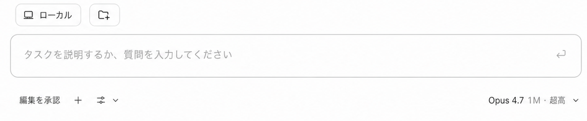
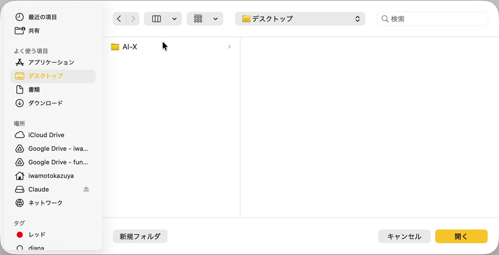
フォルダを選んだら、下の文章を送ってみてください。
このフォルダについて説明してください。まだ何もなければ、空のフォルダだと教えてください。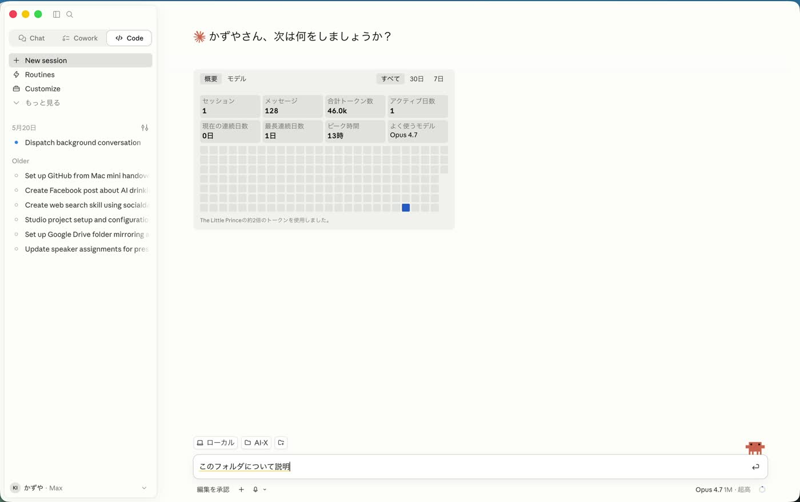
Claudeがフォルダの中身を確認し、空のフォルダならその旨を返してくれます。ここまで動けば、アプリの基本動作は確認できています。
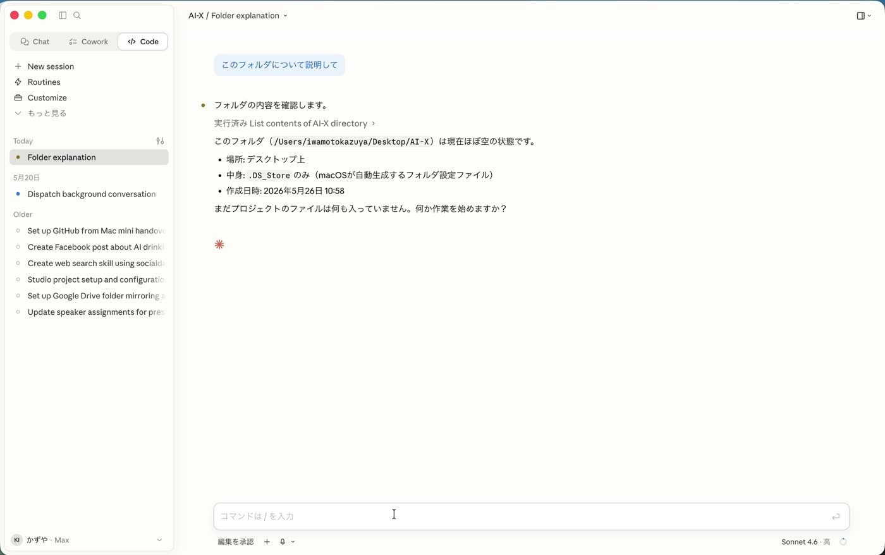
次に、簡単なメモを作ってもらいます。ここまで送れれば、初期設定の練習は十分です。
研修受講用のメモファイルを作成しておいて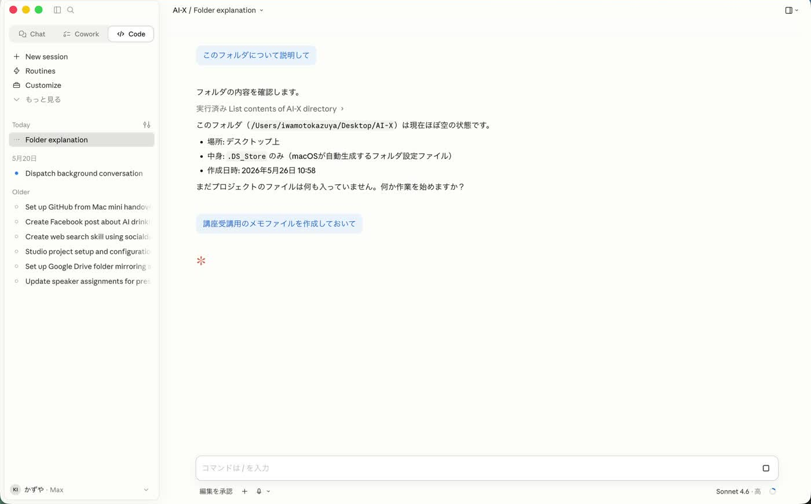
うまくいかない時
設定変更が必要そうな場合は、無理に進めずスクリーンショットを保存して共有してください。
ブラウザ右上のダウンロード一覧、またはダウンロードフォルダを確認してください。見つからなければ、もう一度公式ページからダウンロードします。
ブラウザでClaudeにログインできるか確認し、Claudeアプリを一度終了して開き直してください。
Claude Proの契約が完了しているか、正しいアカウントでログインしているかを確認してください。反映まで少し時間がかかる場合があります。
最初はデスクトップの練習用フォルダだけを選びます。お客様情報や社外秘資料が入ったフォルダは、練習では使わないでください。
最後に確認
研修前に、ここまで進んでいるか確認します。
つまずいた場合に共有するもの
止まった場合は、エラー画面のスクリーンショットを撮って保存してください。
注意
初回練習では、実際のお客様情報・個人情報・社外秘資料は使わないでください。まずは練習用フォルダやダミー資料で動作確認をしてください。